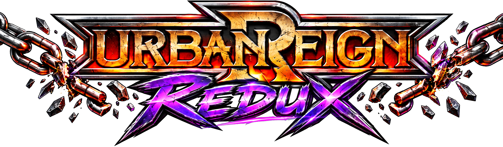
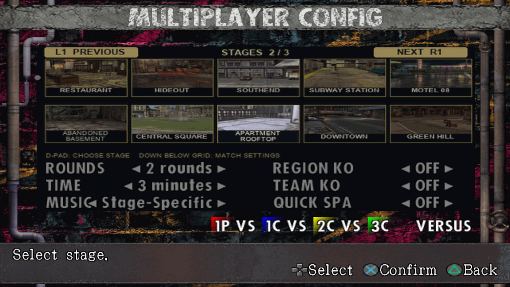
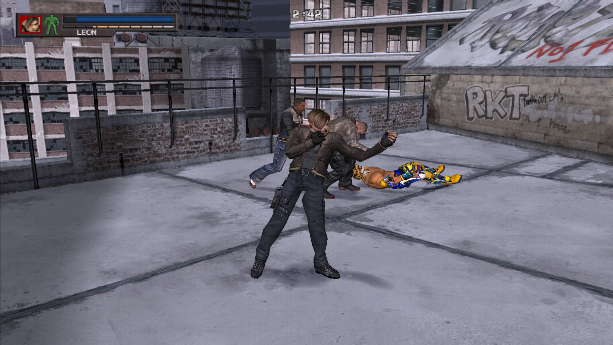
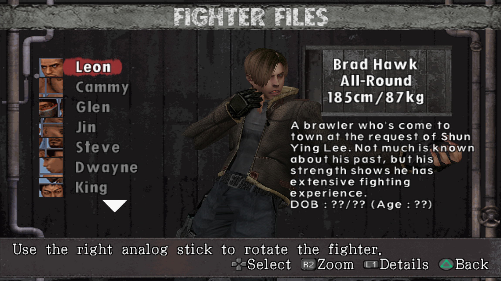
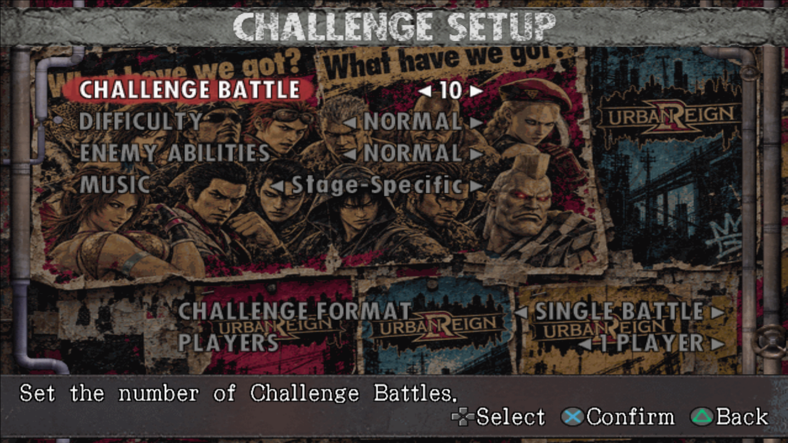

{kind=link}
{kind=link}
{kind=link}
{kind=link}
Patch and play
Select the mods you want and apply them from a standalone Windows app. Clone creates a separate -modded.iso; Overwrite keeps a restoration backup.
URBAN REIGN · COMMUNITY MOD PROJECT

What does someone do if they want mods for one of their favorite games? You make them!
This mod pack is designed from the ground up to make modding Urban Reign easier than ever, with 20+ characters already ready to play. Start with a 43 MB installer. Mod Manager is included; only your selected characters, music and optional Editor are downloaded.
A new cast and a complete Redux presentation for Urban Reign.
THE ULTIMATE MULTIPLAYER BEAT 'EM UP
Want a new flavor of Smash Bros. with a deeper fighting game aesthetic? Urban Reign was one of those classic hidden gems with an addictive and deep gameplay system under its hood, but a rushed development meant it could never see its full potential.
Now, thanks to mod tools, this addictive multiplayer beat 'em up actually has the roster it deserves.
Select the mods you want and apply them from a standalone Windows app. Clone creates a separate -modded.iso; Overwrite keeps a restoration backup.
Music, menus, moves—you name it! The tools are here to tailor your game into whatever you want it to be.
The optional editor provides model previews and tools for preparing models, textures and audio, then exporting ready-to-apply launcher packs. Be sure to share your creations with the community!
Let's tear it up!
A CLOSER LOOK
Characters, tools and in-game
captures from the release.
OPTIONAL — FOR MOD CREATORS
The complete beginner workflow from the editor,
with the same guides and banner artwork.
Swap familiar faces for your own cast. Preview characters, customize their look, and take the finished lineup into a fight.
Bring a model from Blender, fit its rig, then add portraits and voice clips. The following steps walk you through it.
Try one character first. A clean model and a few good movement checks make the rest much easier.
Choose Prepare to begin. Return to Orbit whenever you want to try a step in the viewer.
Choose your target fighter and treat their memory budget as the final limit. Around 3,000–4,000 triangles is a useful starting point.
Use a neutral T-pose, keep useful joint loops, close seams, and remove hidden geometry before export.
Export the OBJ and MTL with diffuse PNGs and UVs. Use RGBA for hair and bake procedural materials first.
In Settings, select the original ISO, mod folder, output folder, and emulator. Keep the original model and disc image intact.
Rig prepares the OBJ and transfers the target fighter's weights. Mixamo is optional, not required.
Center the major joints carefully. A misplaced ankle, knee, or shoulder creates obvious bends.
Check guard, punch, crouch, and head turn poses. Bind hair to the head and keep rigid armor stable.
Reset the pose before export and save the weight sidecar so reviewed weights preserve your edits.
Anchor the attachment point firmly to the body so the accessory does not drift.
Match the helper chain to the target character's native physics bones whenever possible.
Fade influence gradually along the belt or strap so movement travels smoothly toward the loose end.
Viewer checks help, but a short in-game fight reveals clipping and physics problems best.
Create a clear 256 × 256 portrait that reads well in the character select layout.
Add matching voice clips and preview them before building the final mod.
Use 1K textures as a practical baseline, preserving transparency and the source material layout.
Review names, portraits, voices, textures, memory use, and movement before export.
Keep every texture island in the same position so the model continues to read the intended material.
Start at 1K. Use 2K where the added detail is visible and the memory cost makes sense.
Place optional replacement textures in the emulator texture pack for a sharper presentation.
Check seams, transparency, color, and detail at normal gameplay distance.
Select the character and presentation packs you want in the mod loader.
Apply the selected packs to a clone or recoverable overwrite of your supported ISO.
Cold boot the resulting image in your usual setup so every replacement loads cleanly.
Check movement, effects, sound, portraits, and textures, then return to the editor for any final correction.
SMALL INSTALLER. YOUR CHOICE.
Urban Reign Redux 0.2 Alpha — the 43 MB Windows Auto-Installer.
↓ DOWNLOAD AUTO-INSTALLERMod Manager · Editor (Optional) · All mods
Choose your PCSX2 folder. Setup handles Documents/OneDrive, the memory patch, runtime files and HD textures.
No separate ZIPs. No folders to copy by hand.
Default textures and intro are required. Optional downloads need internet. PCSX2 and a game ISO are not included.
START HERE
Keep the defaults to play. Advanced lets you pick individual characters. Editor is last and unchecked.
Select the folder containing pcsx2-qt.exe. Open PCSX2 once beforehand, then close it. Setup finds its data folder and installs everything needed automatically.
Open Redux Mod Manager. Browse to your original supported ISO, keep Overwrite and Redux 0.2 Collection selected, and click Apply selected mods. Fresh-boot the patched ISO in PCSX2.
Each installer page has a sharp visual guide with minimal text. The guide is also included offline.
Windows 64-bit, PCSX2 with ExtraMemory support, and your own supported Urban Reign ISO. Tested with PCSX2 2.7.403. Neither the emulator nor the game is included.
No. Players use Mod Manager. The Editor is for making or changing mods.
Overwrite is the default and retains an original backup. Choose Clone if you want a separate -modded.iso.
VERSION 0.2
Expanded selection, multiplayer story locations and a mouth-animation pilot. Violet and Marduk deformation remains a known issue. Read all changes and known issues.





Supported USA and verified Deluxe images. USA CHD converts automatically and stays unchanged. Europe and Japan are not supported.
If installation or building fails, open Support logs in Mod Manager, or click the installer error, and share the latest log.